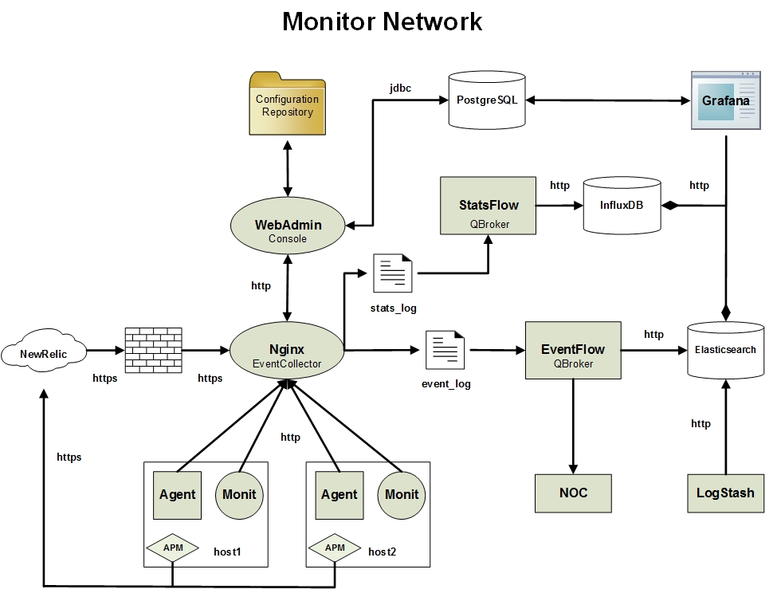

EventFlow is a centralized Event broker that supports Event Pub/Sub services and Event correlations. It periodically fetches the new events from EventCollector, a centralized Event logging system running inside a web server of Nginx. Any applications, including MonitorAgent, can send or publish events to the service of EventCollector via REST requests. EventFlow picks them up and processes the events in their original order. End users and applications can subscribe certain events according to their content, priority and/or the origin. EventFlow will deliver the events to the customers. Besides, it is common to have EventFlow to store every event to Elasticsearch for analysis. If there is an enterprise event center, EventFlow can escalate events to it also. Here is the diagram of a monitoring system with visualizations on both metrics and events.
EventCollector requires Nginx. EventFlow requires qbroker-1.1.0.jar.
EventFlow is just an instance of QFlow. You can find the installation details at QFlow .
EventCollector needs to be installed on the same box. Please follow the instruction for WebAdmin to install the web server for EventCollector. After EventFlow is installed, you need to configure it to fit your requirements. The following sections are going to talk about operations and configurations.
Once EventFlow is installed and configured properly, you should have the following filesystem layout:
| path | function | example |
|---|---|---|
| /opt/qbroker | home dir of QBroker | |
| /opt/qbroker/bin | dir for startup script and other utilities | |
| /opt/qbroker/bin/QFlow_EVENT.sh | startup script of EventFlow | ./QFlow_EVENT.sh restart |
| /opt/qbroker/init.d | dir for init scripts | |
| /opt/qbroker/init.d/S50QFlow_EVENT | wrapper for startup script of EventFlow | /opt/qbroker/init.d/S50QFlow_EVENT restart |
| /opt/qbroker/flow | dir for flow instances | |
| /opt/qbroker/flow/EVENT | dir of configuration files for EventFlow | |
| /opt/qbroker/flow/EVENT/flow.json | master configuration file | Flow.json |
| /opt/qbroker/lib | dir for java libraries and native libraries | |
| /opt/qbroker/lib/qbroker-1.x.y.jar | jar file | |
| /opt/qbroker/templates | dir for template files | |
| /opt/qbroker/templates/mail.txt | template file for email alert | mail.txt |
| /var/log/qbroker | dir for QBroker logs | |
| /var/log/qbroker/QFlow_EVENT.log | log file of EventFlow | |
| /var/log/qbroker/QFlow_EVENT.out | stdout and stderr of EventFlow | |
| /var/log/qbroker/.status | dir for stateful files | |
| /var/log/qbroker/archive | dir for archived logs | |
| /var/log/qbroker/checkpoint | dir for checkpoint data | |
| /var/log/qbroker/events | dir for event logs from all the nodes | |
| /var/log/qbroker/incoming | dir for incoming events | |
| /var/log/qbroker/stats | dir for statistical and historical logs |
The normal operation tasks involve start, stop, restart, reload, troubleshoot the log files, subscription management and deployment. EventFlow keeps its configuration files in /opt/qbroker/flow/EVENT. The external subscriptions are in /opt/qbroker/sub. Among the various configuration files, the master configuration files are most important. They are /opt/qbroker/flow/EVENT/Flow.json for EventFlow and /opt/qbroker/sub/*/Sub.json for external subscriptions. Here is an example: Sub.json. The details on the configurations will be covered by a dedicated section. Here we will focus on how to start, stop, restart, and reload from command line on the local box and where are the logs.
To start EventFlow, go to /opt/qbroker/init.d and run ./S50QFlow_EVENT start as the owner or root. If this command is not invoked by its owner, it will try to su to the owner and probably prompt for the password of the owner. EventFlow runs as qbadm for the repository. In case you want it to restart applications owned by others, you should use sudo for the access. Please check with sudo's man pages on how to allow a user to run scripts on behalf of someone else. There is plenty of examples on internet. You may find some helpful examples. To stop EventFlow, go to /opt/qbroker/init.d and run ./S50QFlow_EVENT stop as the owner or root. The alternative way to operate on EventFlow is to use WebAdmin's operation view to start/stop/restart it remotely.
If you are lucky, EventFlow's process will be running as a daemon. Otherwise, you need to troubleshoot the problem. Always check the errors in /var/log/qbroker/QFlow_EVENT.log and /var/log/qbroker/QFlow_EVENT.out. You should run /opt/qbroker/init.d/S50QFlow_EVENT status to check if the process is running or not. If you are still not able to start EventFlow, please ask around for help.
EventFlow is a Java container hosting two different types of components. The first one is a group of Reporters which are MonitorReport objects used to monitor the internal state and the external environment. The second type is a Flow, a MessageFlow object to process events from various sources. In fact, EventFlow is really an instance of MessageFlow where event is the message to carry application data. Here is the diagram of the MessageFlow:
The building blocks of a MessageFlow are MessageReceiver, MessagePersister and MessageNode. MessageReceiver is to pick up events from various sources. MessagePersister is to deliver events to various destinations. MessageNode has a set of rules to process events. Among various implementations of MessageNode, the most important ones are EventCorrelator, EventMonitor and EventDispatcher. EventCorrelator contains a set of rulesets for event correlations. Those rulesets can be defined in the MessageNode configuration files, or in a separate set of json files. EventMonitor is to keep tracking on selected events and their states. EventDispatcher as the instance of MessageNode is used to dispatch or publish events. It contains multiple rulesets that are also called subscriptions. Each subscription contains an EventSelector, and an ActionGroup for actions on the event. By default, all subscriptions stay in the same folder. But for easy management, they may be stored in separate folders based on their customers. In this case, it will be much easy to manage their access control separately. Those subscriptions are called the external subscriptions.
There are two different type of configuration tasks. The first type is of administration tasks on the EventFlow container and workflow. The main purpose of this type of tasks is to maintain the feature set on the container and manage the rulesets for various customers. The second type is of management tasks on external subscriptions and other rulesets for end users. Here we will focus on the adminitration tasks only.
The configuration files of EventFlow are actually a set of json files. They all locate in /opt/qbroker/flow/EVENT. The master configuration file is Flow.json. Here is an example of Flow.json:
{
"Name": "Flow",
"Site": "DEVOPS",
"Type": "QFlow",
"Category": "EVENT",
"Heartbeat": "60",
"LogDir": "/var/log/qbroker",
"LogDatePattern": "'.'MM",
"ConfigDir": "/opt/qbroker/flow/EVENT",
"MailHost": "localhost",
"Capacity": "1024",
"Operation": "query",
"Mode": "daemon",
"XMode": "1",
"MaxNumberFlow": "1",
"ConfigRepository": "repository_flow",
"IncludePolicy": {
"org.qbroker.node.EventCorrelator": "Ruleset",
"org.qbroker.node.EventMonitor": "Ruleset",
"org.qbroker.node.EventDispatcher": "Ruleset"
},
"Receiver": [
"rcvr_event_log"
],
"Node": [
"node_parser",
"node_switch",
"node_format",
"node_correlation",
"node_monitor",
"node_dispatcher_node"
],
"Persister": [
"pstr_pool",
"pstr_pool",
"pstr_pool",
"pstr_done",
"pstr_null",
"pstr_failure",
"pstr_nohit"
]
}
From this example of the master configuration file, you will see two parts. The first part is the properties for the container of EventFlow itself. It specifies how often to run each of reporter components (heartbeat in second), where to log, where to send emails and where to find other configurations, etc. The second part lists all the components, such as Reporters, Receivers, Nodes and Persisters. The definition of each components should be either in the master file or in a separate json file at the configuration directory. The normal administration task is to add, remove or modify those components according to the customers' needs. Once the configuration is ready, you can follow the operation instructions to start it up.
EventFlow is a complex system. Among the four different types of components, Node should be the focus for the admins. For end users, the subscriptions should be the focus. If ConfigRepository is configured, you can use WebAdmin to deploy changes dynamically without bouncing the container. Otherwise when any change has been deployed to EventFlow, it requires a bounce to activate the change.
A Receiver is a MessageReceiver object. It is used to get events from various sources. To learn about MessageReceiver, you may check this link, QFlow.
You can have as many Receivers as you want. Each Receiver has its own configuration file named after its name plus ".json" extension. The name of every Receiver should be unique in the scope of EventFlow. Here is an example of LogReceiver:
{
"Name": "rcvr_event_log",
"ClassName": "org.qbroker.receiver.LogReceiver",
"Type": "LogReceiver",
"URI": "log:///var/log/nginx/event.log",
"LinkName": "root",
"Partition": "0,0",
"Operation": "fetch",
"OldLogFile": "/var/log/nginx/event.log.1",
"ReferenceFile": "/var/log/qbroker/.status/event.log",
"LogSize": "1",
"MaxNumberLogs": "4096",
"TimePattern": "ss.SSS",
"PatternGroup": [{
"Pattern": ["."]
}],
"Mode": "daemon",
"XAMode": "0",
"TextMode": "1",
"DisplayMask": "6",
"MaxRetry": "2",
"QuietPeriod": "10",
"DependencyGroup": [{
"Dependency": [{
"Name": "event_log",
"URI": "file:///var/log/nginx/event.log",
"Type": "FileTester"
}]
}]
}
This json file just defines the receiver. You also need to merge the following
lines to the master configuration file, Flow.json:
{
...
"Receiver": [
...
"rcvr_event_log"
],
...
}
A Persister is a MessagePersister object. It is used to deliver events to various destinations. To learn about MessagePersister, you may check this link, QFlow.
You can have as many Persisters as you want. Each Persister has its own configuration file named after its name plus ".json" extension. The name of every Persister should be unique in the scope of EventFlow. Here is an example of EventPersister:
{
"Name": "pstr_pool",
"ClassName": "org.qbroker.persister.EventPersister",
"URI": "event://localhost",
"Operation": "invoke",
"LinkName": "pool",
"DisplayMask": "6"
}
This json file just defines the persister. You also need to merge the following lines to the master configuration file, Flow.json:
{
...
"Persister": [
...
"pstr_pool"
],
...
}
A Node is a MessageNode object. It is used to process events with various rulesets. To learn about MessageNode, you may check this link, QFlow.
You can have as many Nodes as you want. Each Node has its own configuration file named after its name plus ".json" extension. The name of every Node should be unique in the scope of EventFlow. Here is an example of configuration for EventMonitor:
{
"Name": "node_monitor",
"ClassName": "org.qbroker.node.EventMonitor",
"Operation": "monitor",
"Capacity": "1024",
"LinkName": "action",
"XAMode": "1",
"DisplayMask": "0",
"Debug": "1",
"StringProperty": {
"hostname": "",
"name": "",
"priority": ""
},
"Ruleset": {
"Name": "shortcut",
"PreferredOutLink": "pub",
"EventPattern": [{
"priority": "^DEBUG$"
}]
}, "event_tracker"],
"OutLink": ["pub", "pub", "pub", "pub"]
}
In the example above, there are two rulesets. The first ruleset is a Map. It explicitly defines all details for the ruleset. On the contrast, the second ruleset only has its name listed. There is no detail defined. It is assumed that the container will load the detail definition in that name and insert the object to the ruleset list at the same position. Therefore, this example shows two different ways to define the ruleset. If you decide to use the indirect way, make sure the classname of the node is defined in IncludePolicy block of the master master configuration file for the message flow.
This json file just defines the message node. You also need to merge the following lines to the master configuration file, Flow.json:
{
...
"Node": [
...
"node_monitor"
],
...
}
Here is the example of configuration for EventCorrelator:
{
"Name": "node_correlation",
"ClassName": "org.qbroker.node.EventCorrelator",
"Operation": "correlate",
"Capacity": "1024",
"LinkName": "parsed",
"Heartbeat": "30",
"SessionSize": "100",
"SessionTimeout": "120",
"XAMode": "1",
"DisplayMask": "0",
"Debug": "1",
"StringProperty": {
"hostname": "",
"name": "",
"priority": ""
},
"Ruleset": [{
"Name": "shortcut",
"PreferredOutLink": "action",
"EventPattern": [{
"priority": "^DEBUG$"
}]
}, "all_mps"],
"OutLink ": ["action", "action", "action", "action"]
}
In the example above, there are two rulesets. The first ruleset is a Map. It explicitly defines all details for the ruleset. On the contrast, the second ruleset only has its name listed. There is no detail defined. It is assumed that the container will load the detail definition in that name and insert the object to the ruleset list at the same position.
This json file just defines the message node. You also need to merge the following lines to the master configuration file, Flow.json:
{
...
"Node": [
...
"node_correlation"
],
...
}
Here is an example of configuration for EventDispatcher node:
{
"Name": "node_dispatcher",
"ClassName": "org.qbroker.node.EventDispatcher",
"Operation": "dispatch",
"Capacity": "1024",
"LinkName": "pub",
"XAMode": "1",
"DisplayMask": "7",
"Debug": "1",
"StringProperty": {
"uri": "",
"status": ""
},
"Ruleset": ["page_mis", "devteam"],
"OutLink": ["pool", "remote", "failure", "remote"]
}
In the example above, there are two rulesets with only names but no details. So we can assume any detail functionalitis for them. As an example, let's assume the first ruleset is a name referencing a subscription to page MIS group. The second ruleset is assumed to reference a ConfigList for DEV team. For the detail of a subscription, it will be discussed in another article. For the detail of a ConfigList, it will be covered in the next section. Here we just need to know that a ConfigList is a list of subscriptions stored and managed in a separate repository.
This json file just defines the message node. You also need to merge the following lines to the master configuration file, Flow.json:
{
...
"Node": [
...
"node_dispatcher"
],
...
}
A ConfigList is an object referencing a list of external rulesets. It is designed for separations between the workflow admins and the end users. EventFlow is a highly configurable workflow engine for event pub/sub services. The subscriptions of the end users are the part of the configurations for the workflow. The end users should be able to manage their own event subscriptions. On the other hand, the details of the workflow and the pub/sub engine should be hidden from the end users. So a list of external rulesets for end users' subscriptions is a good solution. This way, end users are able to focus on their business needs while they are managing their subscriptions. ConfigList is the hook linking the external rulesets to the nodes of EventFlow.
For example, the dev team wants to subscribe the alerts from their applications. So we can set up an instance of ConfigList for the dev team. Here is the example:
{
"Name": "devteam",
"ClassName": "org.qbroker.monitor.PropertyMonitor",
"Site": "DEVOPS",
"Type": "PropertyMonitor",
"RuleType": "ConfigList",
"Category": "WDAP",
"Description": "external config list",
"Step": "1",
"Tolerance": "1",
"MaxRetry": "2",
"MaxPage": "2",
"QuietPeriod": "12",
"ExceptionTolerance": "2",
"URI": "http://panda:8082/sub/devteam/sub.json",
"EncryptedAuthorization": "xxxx==",
"MaxBytes": "0",
"Pattern": "Last-[mM]odified: (\\w+, \\d+ \\w+ \\d+ \\d+:\\d+:\\d+ \\w+)",
"DateFormat": "EE, dd MMM yyyy HH:mm:ss zz",
"Timeout": "60",
"Debug": "1",
"IgnoredField": ["LastModified"],
"Basename": "Sub",
"ComponentGroup": {
"Sub": ["Subscription", "Correlation", "Escalation"]
},
"PropertyFile": "/opt/qbroker/sub/devteam/Sub.json",
"DataField": {
"node_dispatcher": "Subscription",
"node_correlation": "Correlation",
"node_monitor": "Escalation"
},
"DependencyGroup": [{
"Dependency": [{
"Name": "repo_sub",
"ClassName": "org.qbroker.monitor.URLMonitor",
"URI": "http://panda:8082/sub/devteam/sub.json",
"Operation": "HEAD",
"EncryptedAuthorization": "xxxx==",
"MaxBytes": "0",
"Pattern": "Last-[mM]odified: (\\w+, \\d+ \\w+ \\d+ \\d+:\\d+:\\d+ \\w+)",
"DateFormat": "EE, dd MMM yyyy HH:mm:ss zz",
"Timeout": "60",
"TimeOffset": "0"
}]
}],
"ActiveTime": {
"TimeWindow": [{
"Interval": "00:00:00-24:00:00"
}]
}
}
As you can see, this example defines an instance of PropertyMonitor with its URI pointing to the repository for devteam's subscriptions. Once it is deployed, the EventFlow will download the list of configuration for devteam's subscriptions periodically. Those subscriptions should be defined in the service of devteam under the application of Sub. If another team wants a dedicated repository for their subscriptions, the admin just need to create a new hook similar to that of devteam for them.
For management of external subscriptions, please check EventSubscription .
EventFlow is part of QBroker, an open source project at GitHub.